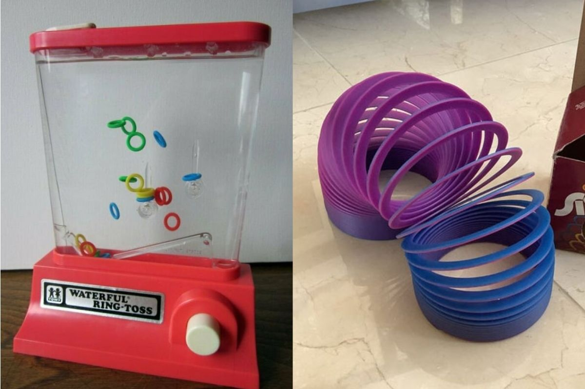
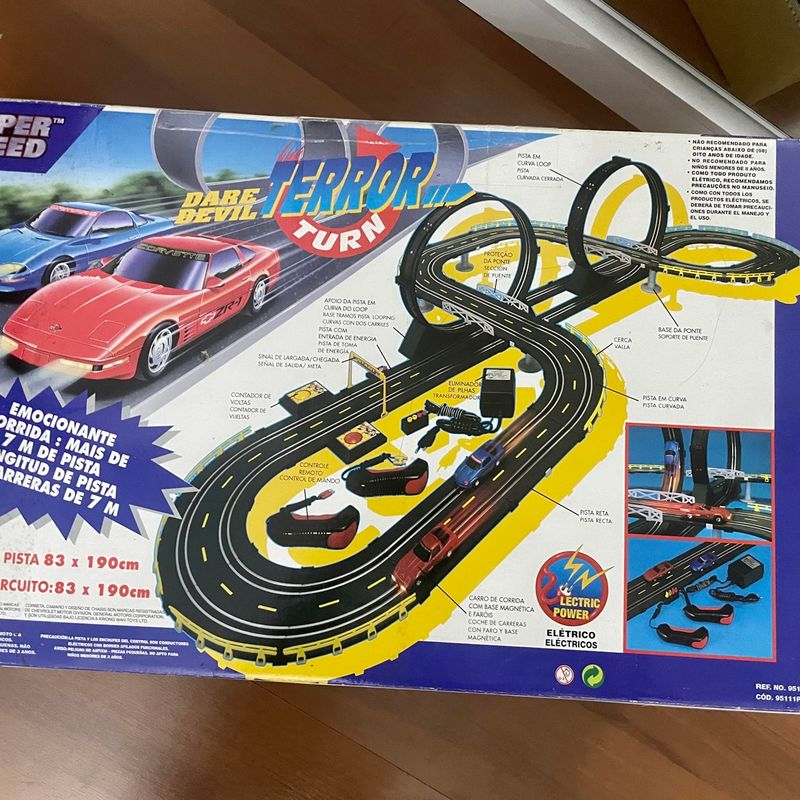
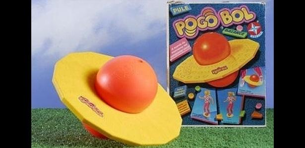
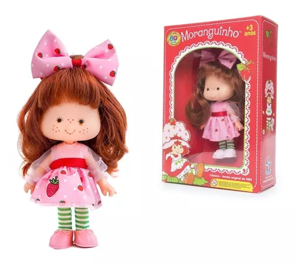

Nesse tópico iremos falar sobre as tecnologias da comunicação (gírias, bordões, aparelhos)... da Geração Y, os Millennials. Leia abaixo e aproveite.
Bordões são frases ou expressões que se tornam populares e são usadas repetidamente por um grupo ou na cultura popular. Eles ajudam a criar identidade e costumam ser associados a um determinado contexto ou personalidade. Aqui estõ alguns exemplos dos bordões mais utilizados pelas marcas da época dos Millennials:
*clique nas frases para ouvir*
Gíria é uma linguagem informal usada por grupos específicos para se comunicar de forma descontraída e expressiva. São palavras ou expressões que surgem em contextos culturais e sociais, com significados únicos e variáveis, refletindo a identidade e o pertencimento de quem as utiliza. Abaixo algumas gírias utilizadas pela Geração Y :
Com a chegada dos anos 1990, período em que começaram a explorar o mundo da computação diante dos pesados
monitores de tubo, a tecnologia avançava rapidamente.
Os disquetes, dispositivos de armazenamento
com
capacidade de 720 KB a 5,76 MB, foram substituídos pelos CDs, que, por sua vez, deram lugar aos cartões SD,
ampliando significativamente a capacidade de armazenamento.
A Geração Y, naturalmente, abandonou o passado analógico com facilidade, abraçando o surgimento de
computadores pessoais mais potentes, smartphones, tablets, GPSs, wi-fi e muitas outras inovações que hoje
fazem parte do nosso cotidiano.
Os brinquedos da geração Y, nascida entre os anos 1980 e 1990, refletem uma época de transição tecnológica e cultural. Essa geração cresceu brincando com jogos de tabuleiro, videogames clássicos, brinquedos colecionáveis e itens populares como bonecos de ação, brinquedos eletrônicos e produtos inspirados em desenhos animados da época. Logo abaixo estão alguns exemplos.
Você provavelmente já ouviu falar dos "Fidgets Toys", aqueles brinquedos anti-estresse que se tornaram uma febre entre as crianças hoje em dia. No entanto, eles não são tão novos assim: as crianças das décadas de 80 e 90 também tinham seus próprios brinquedos pequenos e manuais para se distraírem em viagens de carro ou passeios em família. Esses brinquedos ajudavam a aliviar o estresse, ou, em alguns casos, acabavam causando ainda mais!
O autorama é uma mini-pista de corrida com faixas fixas onde pequenos carrinhos, parecidos com os de Fórmula 1, competem. Considerado um esporte automobilístico, essa atividade continua a atrair entusiastas de velocidade em competições ao redor do mundo.
Lançado pela Brinquedos Estrela em 1987, fez grande sucesso na década de 1990. É um brinquedo divertido, semelhante a um pula-pula, perfeito para as crianças se divertirem no quintal de casa. Ele tem o formato de uma bola de plástico ou borracha cheia de ar, cortada por um disco reto onde você coloca os pés.
Moranguinho e suas amigas Laranjinha, Uvinha e Maçãzinha têm 15,5 cm de altura, com cabeças de vinil e articulações nos braços, pernas e cabeça. Elas usam vestidos lindos e cheios de detalhes, e cada uma possui um cheirinho doce e irresistível, todos diferentes entre si!
Durante grande parte das décadas de 80 e 90, para jogar os games mais avançados, era comum ir ao fliperama
mais próximo. No Brasil, arcade ou fliperama refere-se a máquinas de jogos eletrônicos profissionais,
encontradas em estabelecimentos de entretenimento.
Hoje em dia, os arcades se tornaram itens valiosos entre colecionadores, devido ao seu sistema avançado para
a época e ao lugar especial que ocupam na memória de muitos brasileiros.
Por Kauã silva , Em SENAI - Paraguaçu Paulista
30/08/2024 14:03.